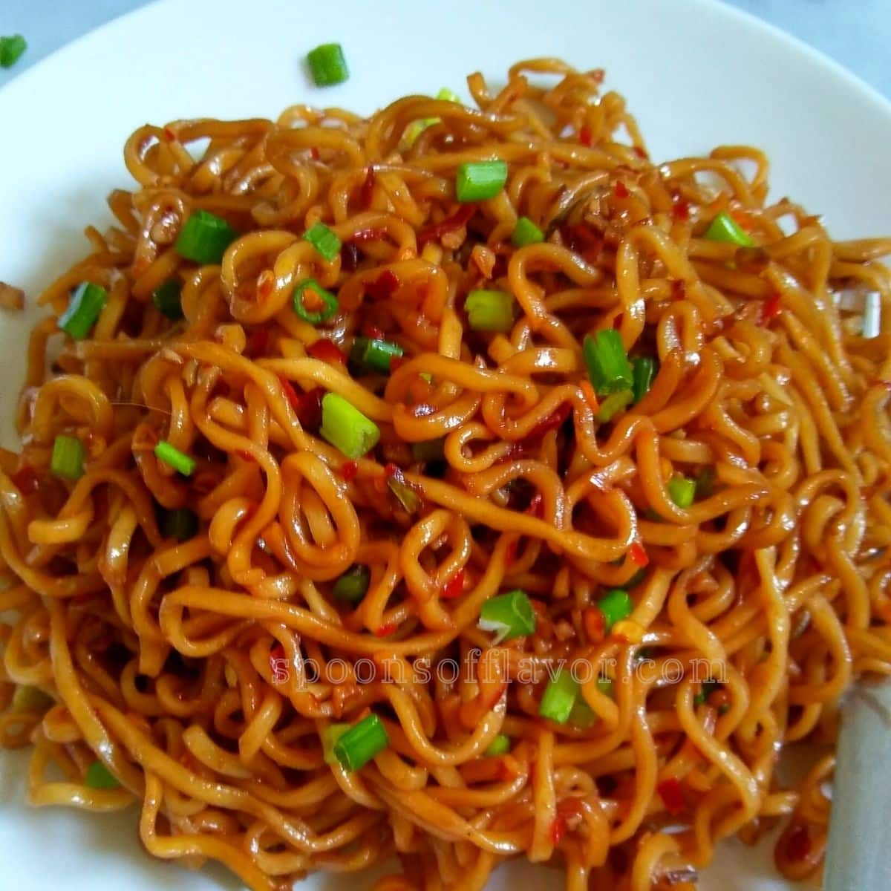

Spicy noodle
Description
Spicy Stir-fried noodles particularly loved by Ghanaian teenagers
Ingredients
- 1 pack of indomie hungry man size
- Sausage
- 2 eggs
- Cabbage
- Carrot
- Spring Onions
- Onion
- Garlic
- Vegetable oil
- Powdered pepper
- Oyster sauce
Steps
- boil the indomie noodle for 8 mins
- Chop and dice your vegetables
- Mince your sausage into tiny pieces
- Using any saucepan, pour a satisfied quantity of your Vegetable oil into the pan
- heat your oil for 5min and fry your diced sausages
- Then, add your diced onion and garlic and egg
- Add the rest of the rest of your vegetables, stir till slightly cooked
- Add your drained noodles and stir till evenly mixed
- Add a preferred quantity of your Oyster sauce and continue to stir
- Then add your pepper and indomie spices respectively and continue to stir
- After 5 mins, your spicy noodle is ready to be served 😋